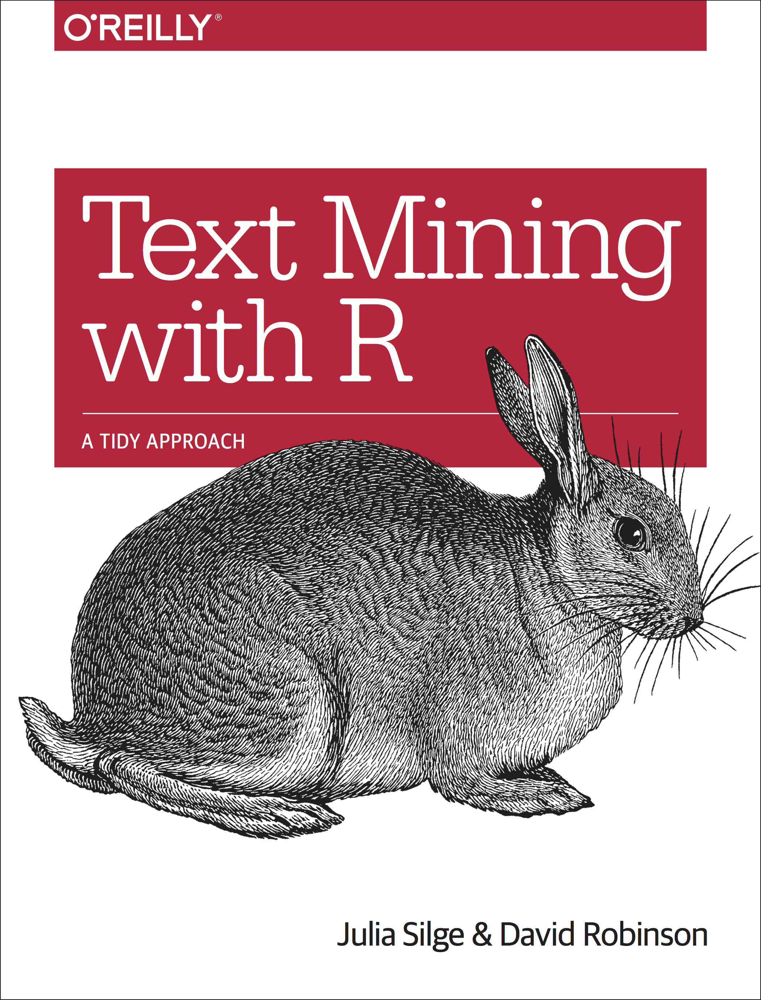
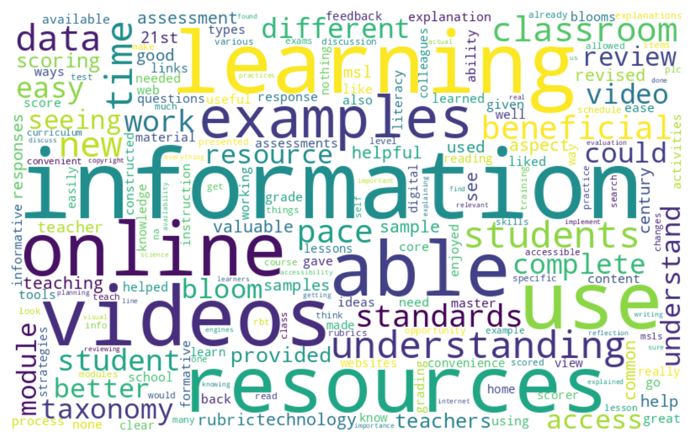
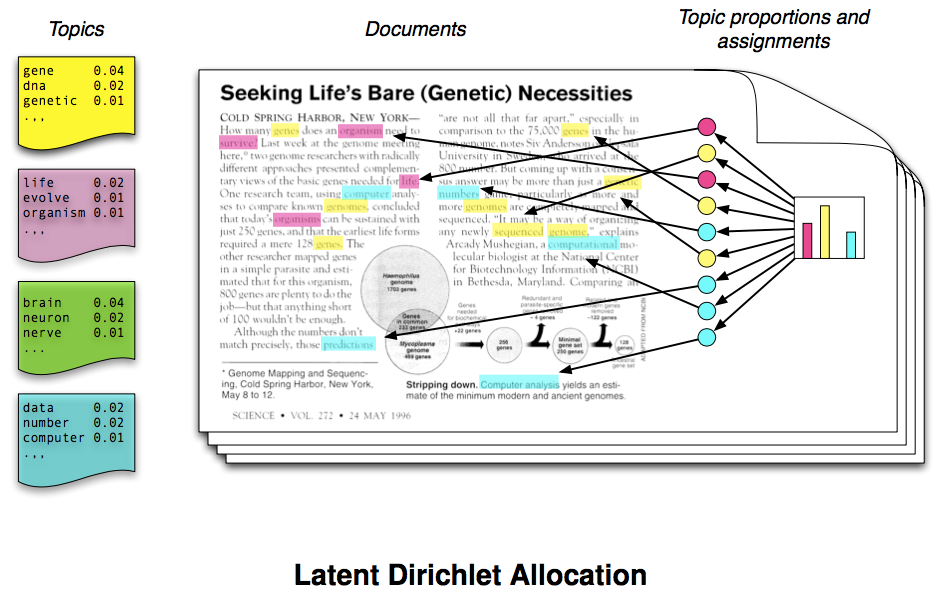
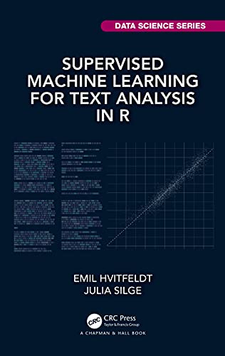

| word | sentiment |
|---|---|
| harmful | negative |
| cynicism | negative |
| cornerstone | positive |
| time-honored | positive |
| pretence | negative |
A Brief Overview
Guiding questions:
Why text mining? What is it exactly?
What are common techniques used for mining text?
What are some of the technical and ethical considerations?
How is text mining used in STEM education research?
Data Sources, Research Opportunities, & Simple Definitions
There has been unprecedented increase in text-based data1 generated by educational processes and digital learning systems, resulting in…
New sources of data
Discussion Forums
Online Assignments
Instant Messaging Tools
Social Media
Other sources?
New opportunities for research
Massive
Always On
Non-reactive
Social relations
Other opportunities?
According to some students, text mining is…
A process for gaining insight into large amounts of text
An exploration of text in search of patterns
Reading tea leaves
Like computer-assisted reading
Magic!
Text mining is not…
A substitute for traditional qualitative analysis
As “automated” as one would like it to be
Magic!

“A central question in text mining and natural language processing is how to quantify what a document is about.”
Frequency, Dictionaries, Topics, & Networks
“… it’s a mistake to imagine that text mining is now in a sort of crude infancy, whose real possibilities will only be revealed after NLP matures… Wordcounts are amazing!1

Yep, a wordcloud, the pie chart of text mining.
Dictionary-based text analysis1 uses predefined list of words, or lexicons, to assign a particular meaning, value, or category to each word in you data:
Bing Sentiment Lexicon Example:
| word | sentiment |
|---|---|
| harmful | negative |
| cynicism | negative |
| cornerstone | positive |
| time-honored | positive |
| pretence | negative |
With a bit of tongue-in-cheek1, Meeks and Weingart describe topic modeling as:
leveraging occult statistical methods like ‘dirichlet priors’ and ‘bayesian models’… to provide seductive but obscure results in the form of easily interpreted (and manipulated) ‘topics.’


Supervised machine learning using text involves building a statistical model to predict some output from input that includes language.1 Outputs may be:
numeric or continuous, such as predicting the year of a United States Supreme Court opinion from text of that opinion.
discrete quantities or class labels, such as predicting whether a GitHub issue is about documentation.
Text data can also be quantified and represented as relational data in the form of networks, as in the case of:
Text Networks where individual words are the nodes
Epistemic Network Analysis where human or automated coded text are the nodes
And the edges between them describe the regularity with which they co-occur in documents.
Logistical, Technical, Ethical, & Legal
Despite the potential advantages of text-based data captured by educational technologies, TM poses a number of challenges1 for STEM Ed researchers.
Logistical & Technical
Unstructured
Inaccessible
Non-Representative
Incomplete
Ethical & Legal
Bias (algorithmic, positivity)
Sensitive
Terms of Use
FERPA
Performance, Feedback, Engagement, & Other
TM has been largely used to evaluate academic performance in different contexts, especially to assess essays and online assignments.1
writing style
use of argumentation
plagiarism detection
peer interaction
To help improve performance, TM is used to provide student feedback, often based on both their interactions and activities.
Intelligent Tutoring Systems
Question-answering applications
Assist teacher feedback
Support formative feedback
TM has been applied to support student engagement and collaboration, especially in distance learning courses.
Automated writing scaffolds
Analysis of interactional resources
Student sentiment extraction
Dropout prevention
Other applications of text mining in STEM Ed Research include:
Automatic text summarization
Analytics & visualization tools
Curriculum adaptation
Recommendation systems
Consider a small network you are a part of (~ 5-10 individuals), or may be interested in studying, and think about the following questions:
This work was supported by the National Science Foundation grants DRL-2025090 and DRL-2321128 (ECR:BCSER). Any opinions, findings, and conclusions expressed in this material are those of the authors and do not necessarily reflect the views of the National Science Foundation.